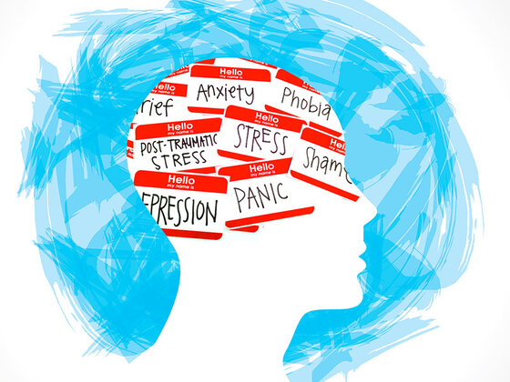

TALKING ABOUT MENTAL HEALTH
Importance of Speaking Up
- Reduces stigma by normalizing conversations about mental health.
- Encourages others to share their experiences and seek support.
- Promotes understanding by increasing awareness of signs and symptoms.
- Facilitates access to help such as therapy, support groups, and services.
- Builds resilience by empowering individuals and showing recovery is possible.
- Supports prevention through early intervention.
- Strengthens relationships via honest, open communication.
- Advocates for change by influencing supportive policies and practices.
- Enhances well‑being by helping people process emotions and experiences.
Conversation Tips
Be direct and compassionate: Use clear, caring language to express concern.
Ask for preferences: Check if and how they want to talk; respect their choice.
Acknowledge their expertise: Listen actively and validate their feelings.
Don’t fear the wrong words: Concern matters more than perfect phrasing.
Avoid avoidance: Not talking can increase stigma—open the dialogue.
No gossip: Respect privacy; keep conversations supportive and confidential.
Promote openness: Normalize mental health discussions to reduce stigma.
Choose words wisely: Use respectful, non‑stigmatizing language.
Create a safe space: Ensure conversations are non‑judgmental and respectful.
Mental Health Services: Where to Get Help
- School‑based support (counsellors, teachers).
- Clinics and community health services.
- Toll‑free helplines (e.g., 393 helpline).
- Youth‑friendly centres.
Congratulations! on finishing the course
You have reached the end of the lessons. Click Finish to complete your learning journey.